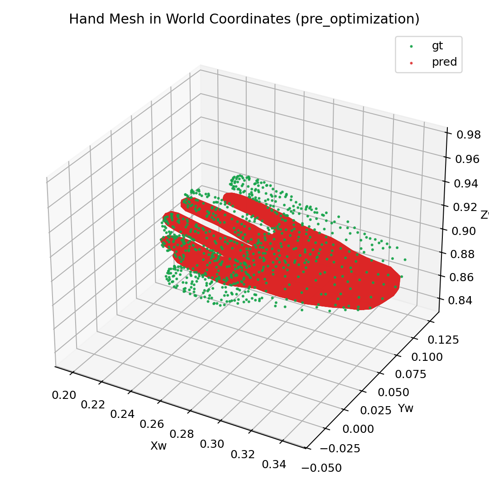
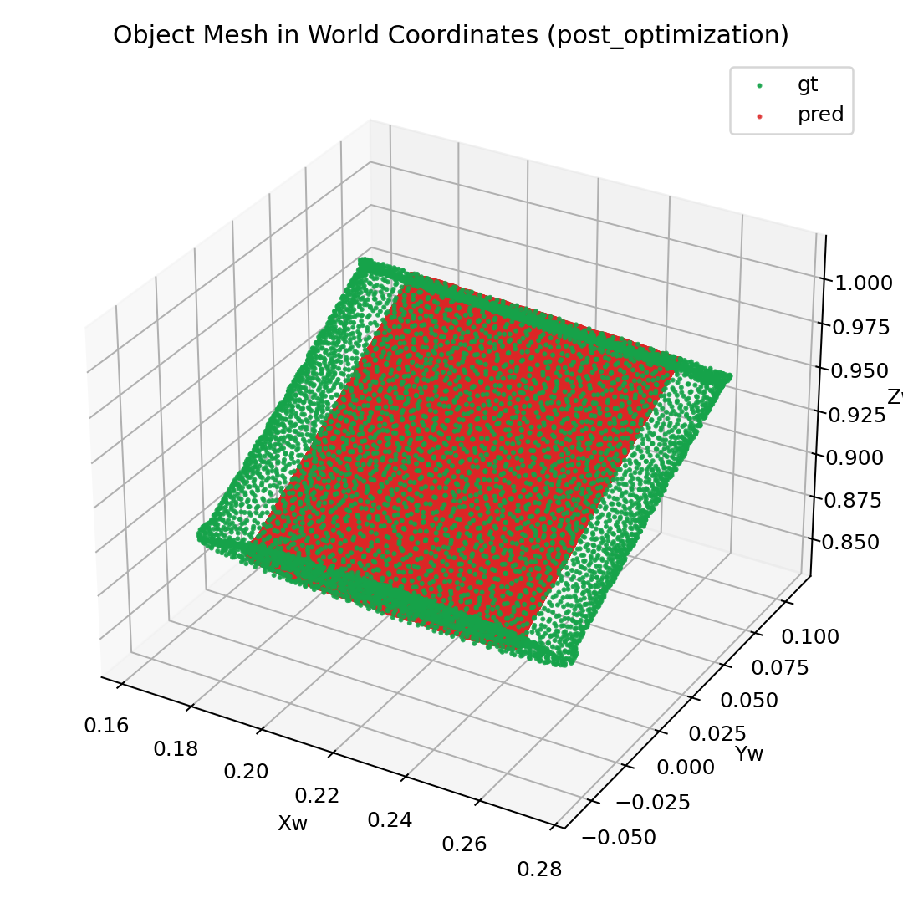
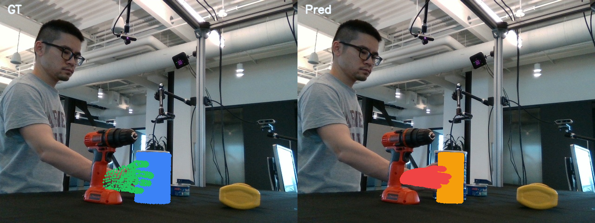
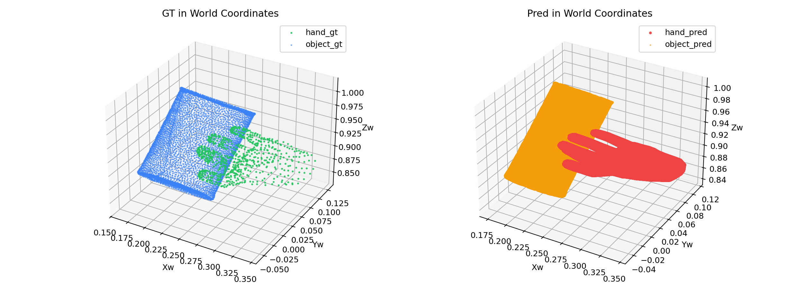

Goal: Fix the bridge alignment problem by initializing W_out @ W_in = I so the token bridge starts as a near-identity mapping.
The overnight overfit analysis revealed that the token bridge (input_proj: Linear(32,1024), output_proj: Linear(1024,32)) fails to learn the identity mapping at random initialization. Instead, the 302M-parameter global_blocks learn a massive 34% correction to compensate, leaving residual latent error that degrades mesh quality.
| Metric (random init) | Before training | After 200 steps |
|---|---|---|
| Bridge-only roundtrip L2 | 1068 | 360 |
| Full pipeline L2 | 1068 | 0.70 |
| Global blocks relative change | 0.35% | 33.88% |
W_out @ W_in dist from I | 5.97 | 3.62 |
Set input_proj to embed the 32-dim latent into the first 32 dims of 1024-dim space, and output_proj to read them back. Biases zeroed.
# input_proj.weight: [1024, 32] ← I_32 in top 32 rows, zeros below # output_proj.weight: [32, 1024] ← I_32 in first 32 cols, zeros right # Result: output_proj(input_proj(x)) = x exactly at initialization
Verification: W_out @ W_in diagonal mean = 1.0, Frobenius distance from I = 0.0, roundtrip L2 = 0.0.
| Step | Random init | Identity init | Speedup |
|---|---|---|---|
| 1 | 1023.19 | 0.0044 | 232,000x |
| 40 | 3.75 | 0.000302 | 12,400x |
| 100 | 5.25 | 0.0000328 | 160,000x |
| 500 | 0.10 | 0.0000034 | 29,000x |
| Metric | Random init | Identity init |
|---|---|---|
| Pre-opt CD hand | 0.00541 | 0.00588 |
| Post-opt CD hand | 0.00589 | 0.00588 |
| Pre-opt CD object | 0.00892 | 0.00918 |
| Post-opt CD object | 0.00919 | 0.00916 |
Chamfer is equivalent — both are bounded by the Trellis.2 encoder→decoder roundtrip fidelity. The key difference is how the system reaches this ceiling: random init needs 302M-param global_blocks to compensate, identity init achieves it with just the 67K-param bridge.
| Step | Random init hand | Identity init hand | Random init obj | Identity init obj |
|---|---|---|---|---|
| 1 | 0.030 | 0.0165 | 0.038 | 0.0240 |
| 500 | 0.017 | 0.0165 | 0.024 | 0.0240 |

Pre-training: hand mesh already aligned with GT from step 0 (identity bridge). CD=0.00588.
Post-training (500 steps): same quality maintained. CD=0.00588.
Pre-training: object mesh already correct from step 0. CD=0.00918.

Post-training (500 steps): quality maintained. CD=0.00916.
Pre-training overlay: GT (left) vs pred (right). Already aligned from step 0.

Post-training overlay: identical quality.

Pre-training world scene.
Post-training world scene.
The token bridge now starts with output_proj(input_proj(x)) = x. Latent recon loss starts at 0.004 instead of 1023. The decoder receives correct latents from step 0, producing correct meshes immediately.
With random init, global_blocks wasted 302M parameters learning a 34% correction to fix the bridge. With identity init, they stay near-identity and are fully available for their intended purpose: learning cross-modal fusion between visual tokens and SLat tokens during multi-frame training.
The single-frame overfit is now a solved problem: the bridge faithfully preserves encoder latents, the decoder produces correct meshes, and global_blocks are free for cross-modal learning. The next step is to train on multiple frames where global_blocks must learn to fuse visual context from images with SLat tokens from GT meshes.